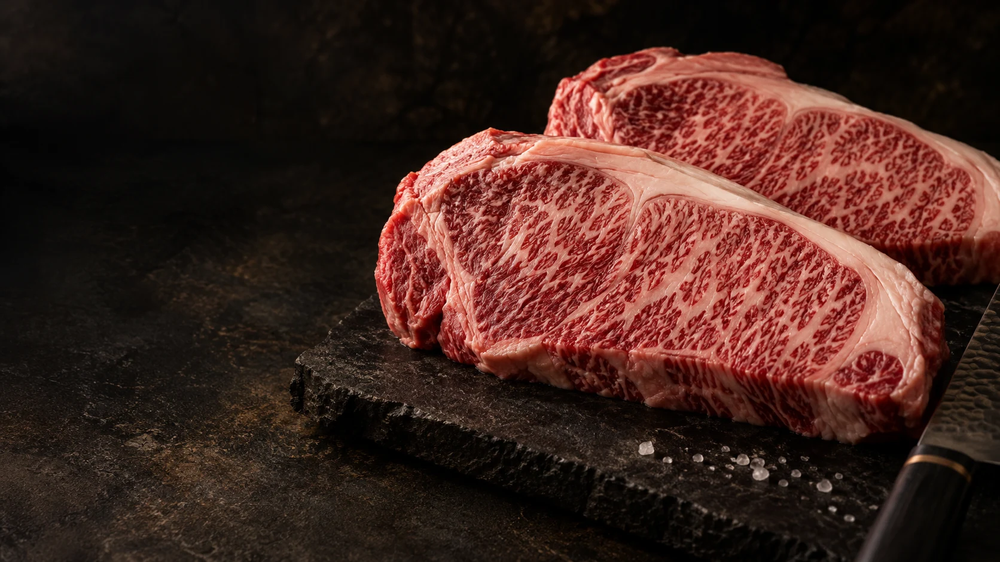
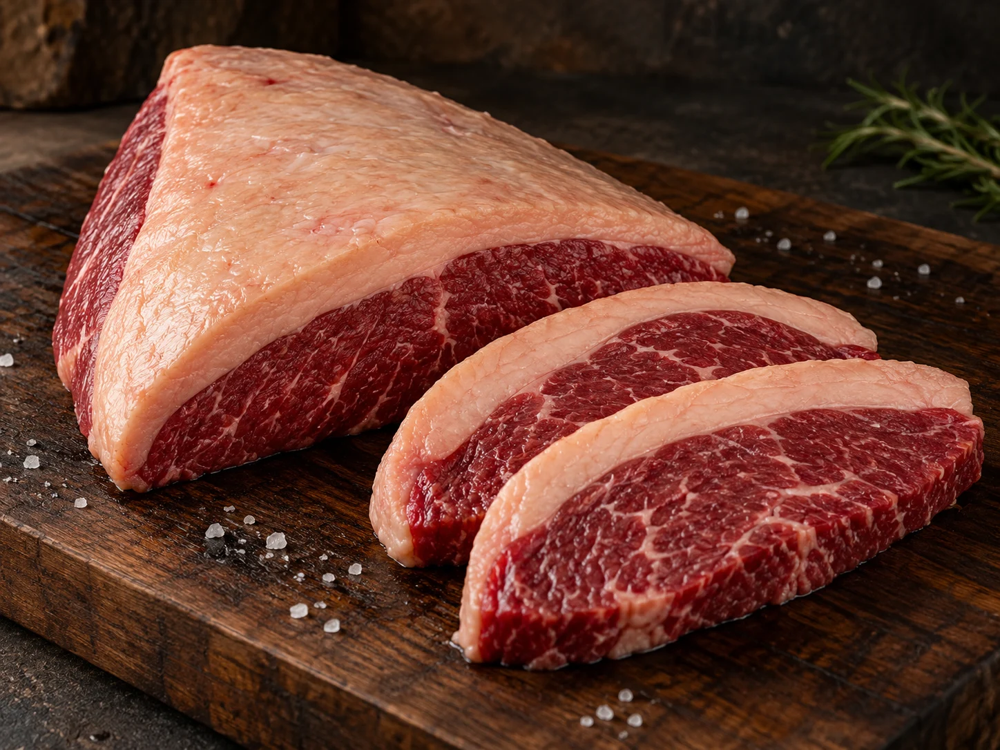
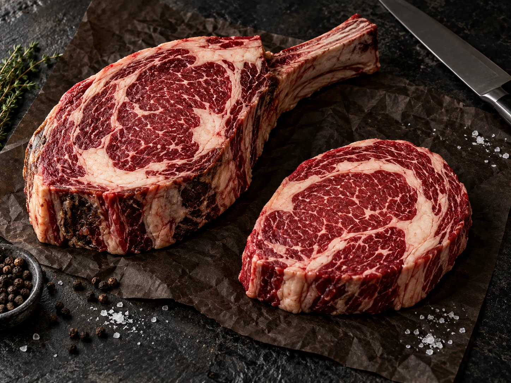

MARMOREIO & DELICADEZA

Boutique de carnes de origem
Grandes origens.
Novos encontros.
Cortes que despertam os sentidos.
Uma seleção feita para chegar à sua mesa.
01 / A NOSSA ESSÊNCIA
Antes do primeiro corte,
existe uma origem.
Há escolhas que transformam uma refeição em um encontro memorável. A BRADO nasce dessa convicção.
Uma boutique de carnes em Marabá, com o olhar voltado às boas origens, aos cortes especiais e a quem aprecia cada detalhe. Um espaço reservado, uma seleção cuidadosa e a praticidade do delivery.
Conheça as nossas inspiraçõesORIGEMCRITÉRIOPERSONALIDADE
02 / A SELEÇÃOUM PRIMEIRO OLHAR
Extraordinário.
Em cada detalhe.
Do marmoreio delicado do Wagyu à personalidade dos grandes cortes. Conheça o universo que inspira a seleção BRADO.

TRADIÇÃO & PRESENÇA
INTENSIDADE & TEXTURAUm aperitivo do que estamos preparando. O catálogo e a disponibilidade serão apresentados no lançamento.
03 / UM OLHAR PARA AS ORIGENS
DIFERENTES TERRAS. A MESMA EXIGÊNCIA.
O mundo inspira.
A BRADO seleciona.
Nossa curadoria está sendo construída a partir de tradições que respeitam o tempo, a criação e o sabor. Do Brasil às origens que fazem da carne uma cultura.
BRASIL · A NOSSA RAIZ
A NOSSA RAIZ
O sabor que nos reúne.
Nossa história começa aqui. A tradição do churrasco brasileiro inspira uma seleção que valoriza a origem e a personalidade de cada corte, da picanha aos cortes menos óbvios.
04 / A EXPERIÊNCIA BRADO
ESCOLHAS QUE TÊM PERSONALIDADE.
FEITA PARA QUEM APRECIA
Uma boutique.
O seu momento.
Estamos criando um espaço intimista em Marabá, com atendimento próximo e uma seleção que convida a descobrir.
01
Escolhas com atenção
Uma conversa sobre cortes, ocasiões e preferências. Cada escolha merece tempo.
02
Da boutique à sua casa
O delivery fará parte da nossa essência, levando a seleção BRADO até os seus encontros.
03
Além do corte
Vinhos, temperos e acessórios para completar o ritual de quem aprecia uma boa carne.
EM BREVE
Marabá, o próximo
encontro tem origem.
Estamos preparando a nossa chegada.
Uma nova boutique de carnes nobres, com a personalidade da BRADO.
Marabá · Pará · Brasil
Data de inauguração, endereço e canais de pedidos serão divulgados em breve.